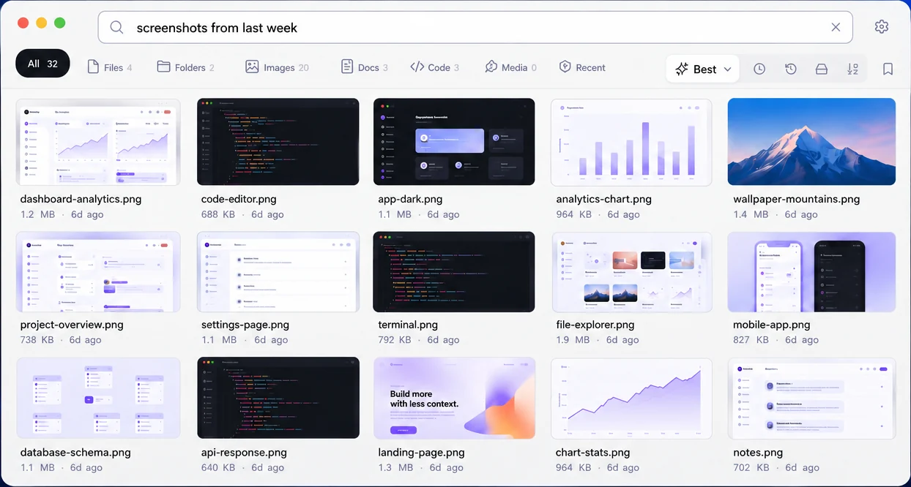

Windows
Detected OSThe setup installs for your account without admin access. If SmartScreen appears, check the publisher before choosing More info → Run anyway.
Kensaku is a free desktop app that finds text in your documents, code, and screenshots, right on your computer.
Get KensakuRelease v1.0.20
The setup installs for your account without admin access. If SmartScreen appears, check the publisher before choosing More info → Run anyway.
For Apple silicon and Intel. The app is currently unsigned and unnotarized. If blocked after opening it, go to System Settings → Privacy & Security → Open Anyway.
For x86-64. Make the AppImage executable before opening it. Debian and RPM packages are available in All downloads.

Choose the installer for your computer.
Install Kensaku and open the app.
Choose what to index, then start searching.
macOS and Linux
curl -fsSL https://github.com/yjid/kensaku/releases/latest/download/install.sh | shWindows PowerShell
powershell -ExecutionPolicy ByPass -c "irm https://github.com/yjid/kensaku/releases/latest/download/install.ps1 | iex"Find a line of code or a phrase in a PDF, Office document, or Markdown note.
Use optical character recognition (OCR) to search for words captured in an image.
Use semantic search when you remember the idea but the exact wording escapes you.
Choose the folders to index. The index and your search queries stay on your device.
Connect an MCP client to search the same local index through Kensaku’s CLI.